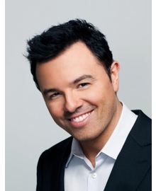
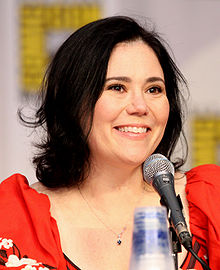
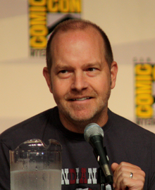
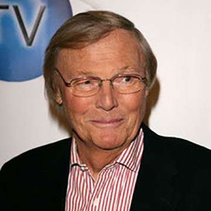
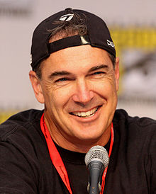

Seth MacFarlane
Seth MacFarlance plays the roles of Peter Griffin, Brian Griffin, Stewie Griffin, Dr. Hartman, Seamus, Tom Tucker, Glenn Quagmire and Carter Pewterschmidt
Alex Borstein
Alex Borstein plays the roles of Lois Griffin, Tricia Takanawa, Loretta Brown, Barbara Pewterschmidt, and Maurgerite Pewterschmidt.

Seth Green
Seth Green plays the role of Chris Griffin.

Mila Kunis
Mila Kunis plays the roles of Meg Griffin.
Lacey Chabert
Lacey Chabert plays the understudy of Mila Kunis' character, Meg.
Mike Henry
Mike Henry plays the roles of Mr. Herbert, Cleveland Brown, Greased Up Deaf Guy and Cleveland Brown. Jr,
Adam West
Adam West plays the role of Mayor West.
Patrick Warburton
Patrick Warburton plays the role of the great paralyzed gentle, Joe Swanson.